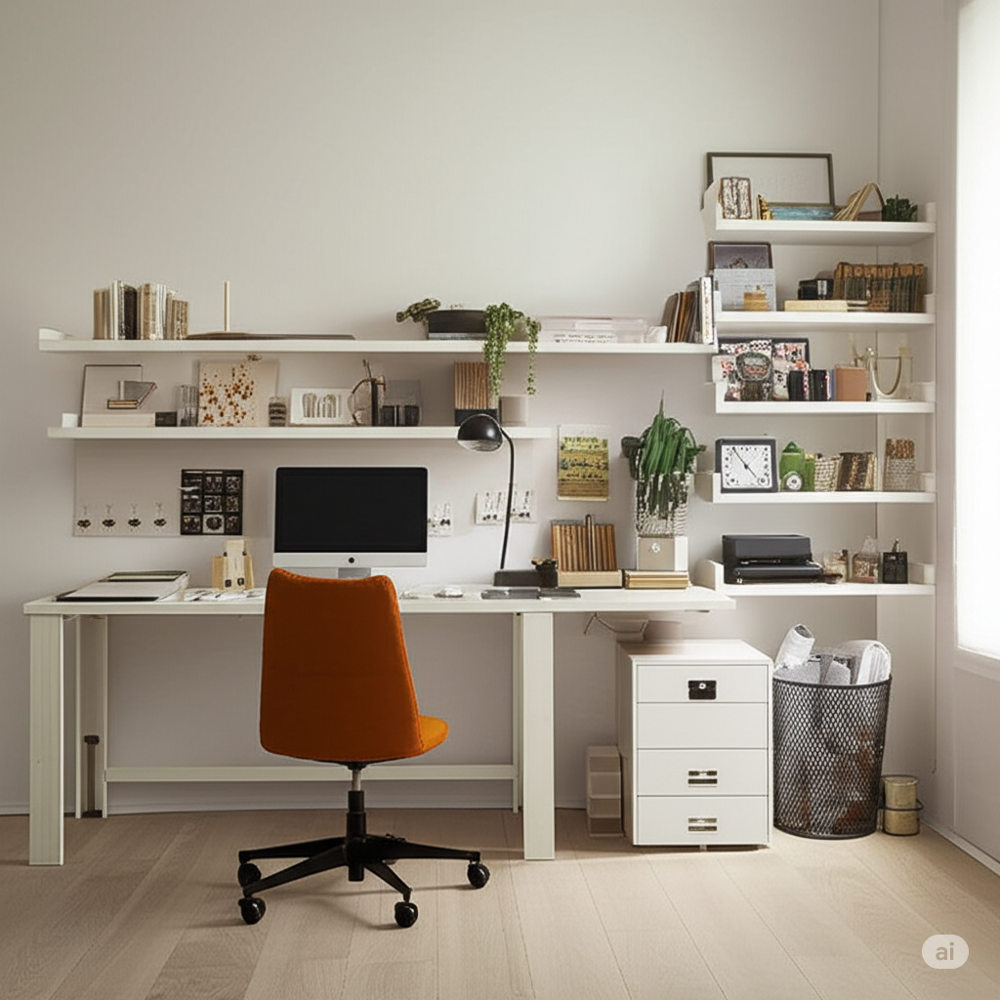
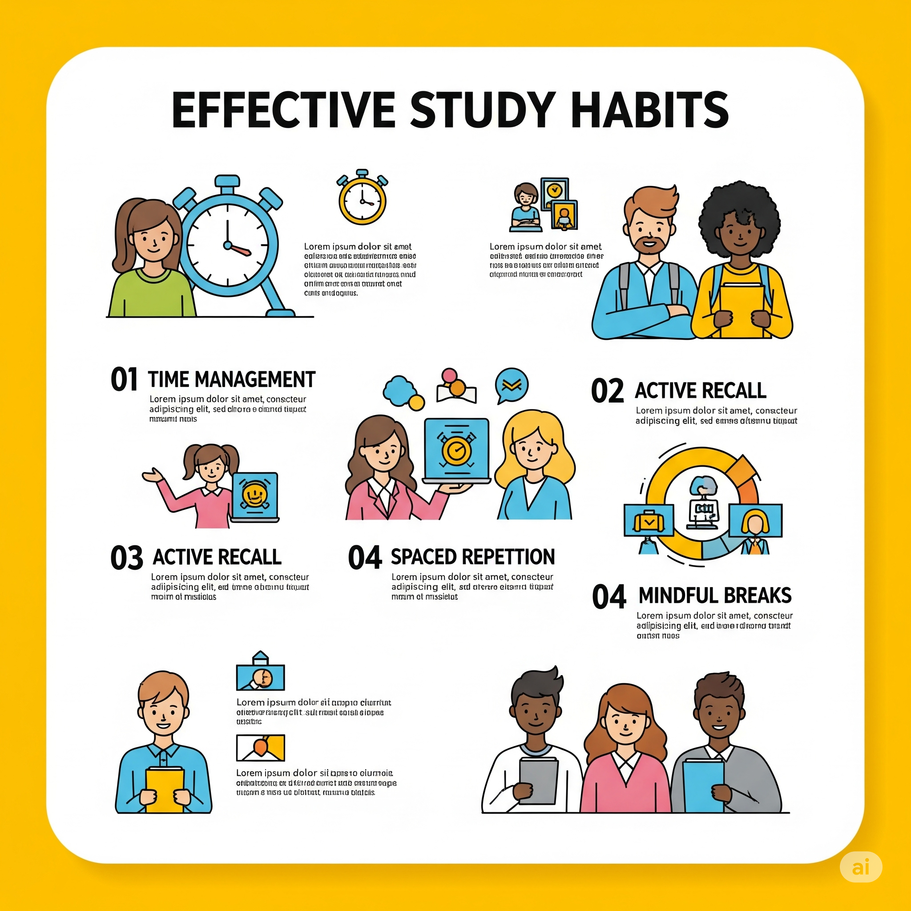
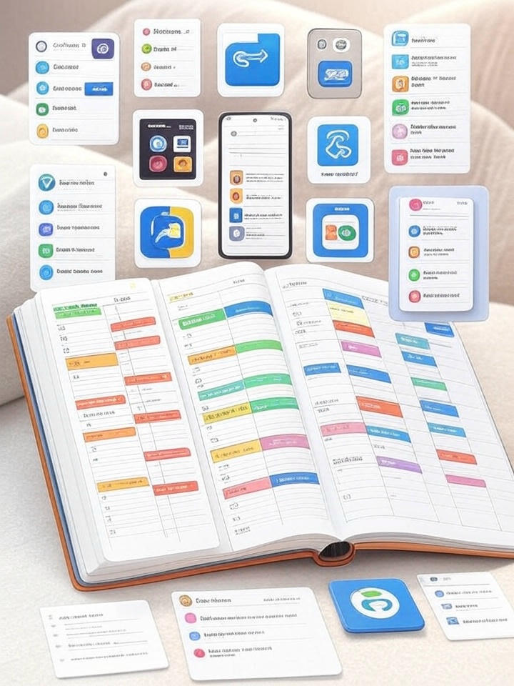
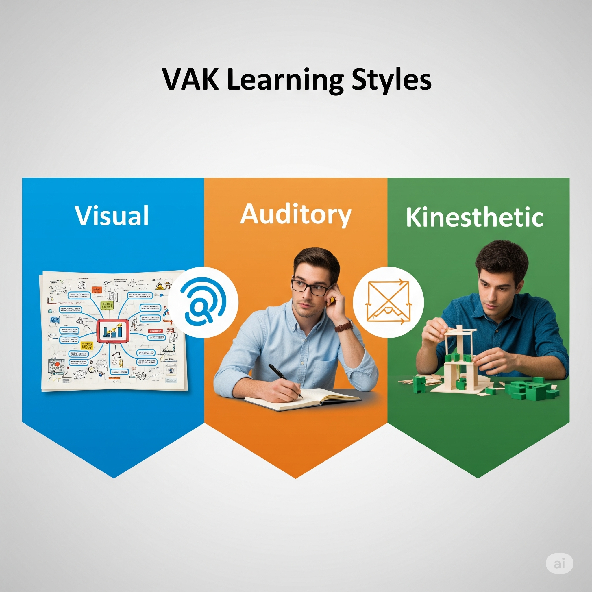
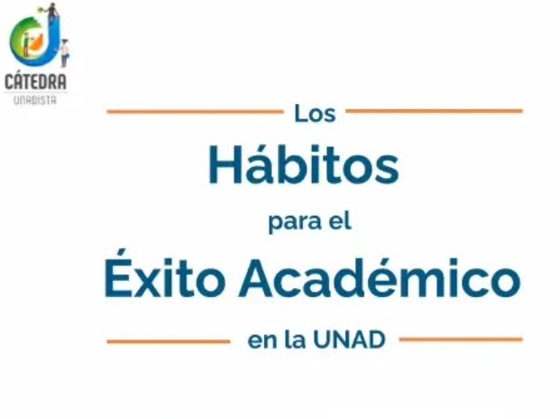
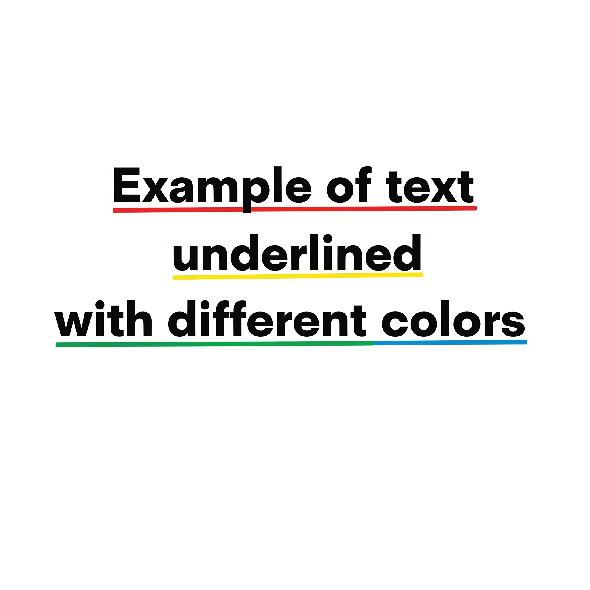
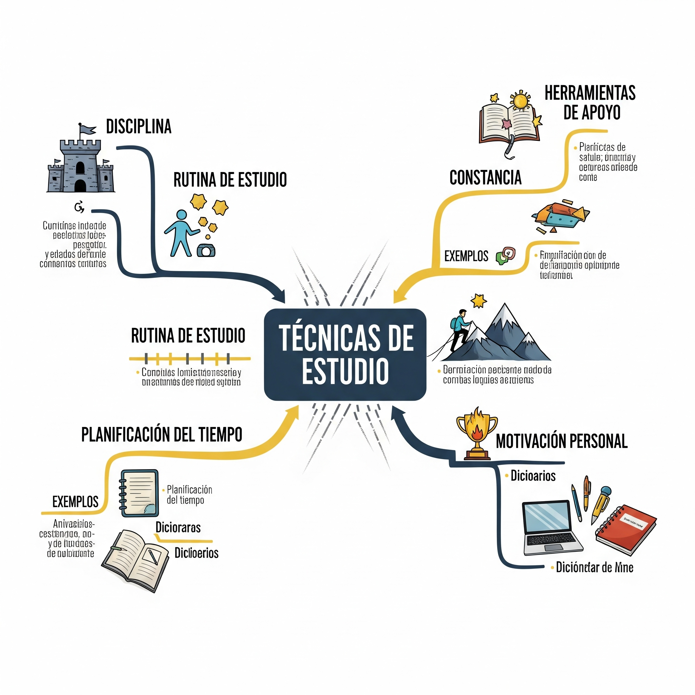
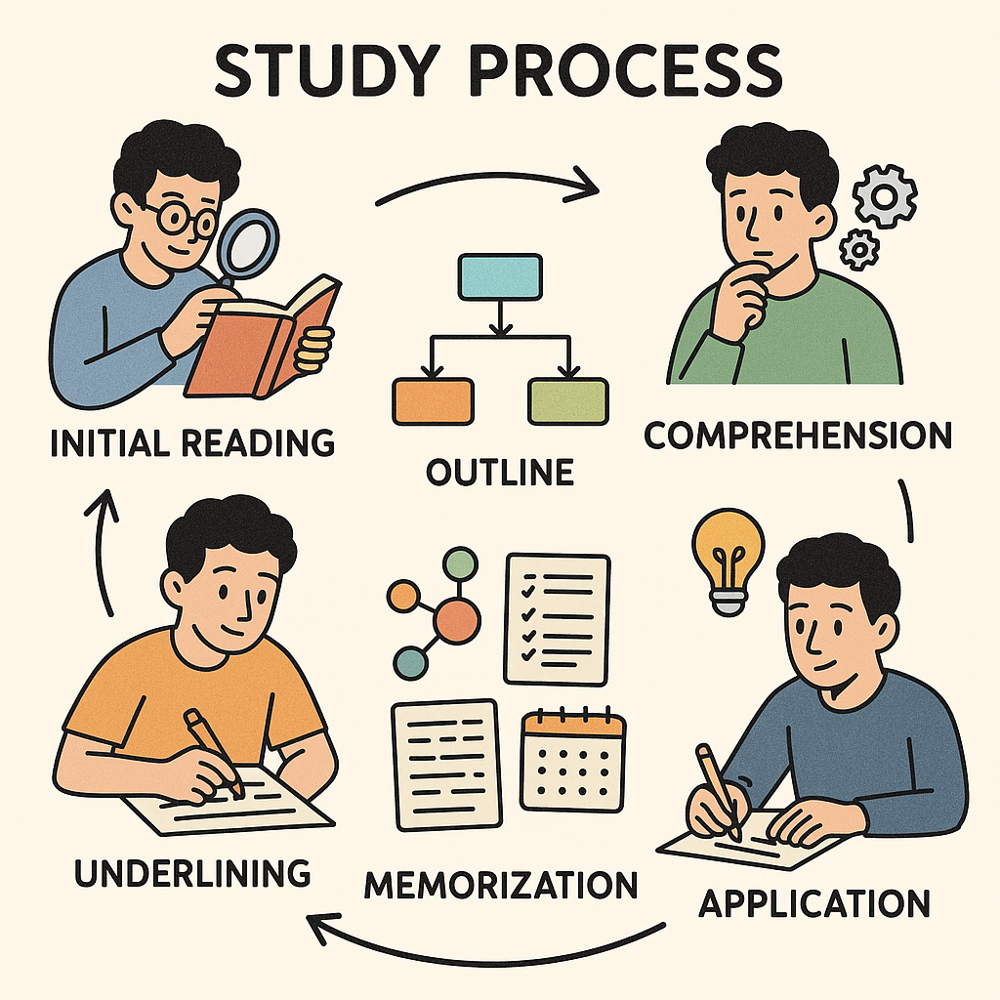

Hábitos de estudio y su influencia

Horario Personal
| Hora | Lunes | Martes | Miércoles | Jueves | Viernes | Sábado | Domingo |
|---|---|---|---|---|---|---|---|
| 2:00 pm - 4:00 pm | Lecturas y avances | Entregas pendientes | |||||
| 2:00 pm - 5:00 pm | Entregas pendientes | ||||||
| 6:00 pm - 7:00 pm | Revisión y tareas | Gestión de Calidad | Gestión de Ventas | Gestión Tecnológica | |||
| 6:30 pm - 7:30 pm | Programación de IA | ||||||
| 7:00 pm - 8:00 pm | Revisión y tareas | Cátedra Mateísta | Gestión de Ventas | Gestión Tecnológica | |||
| 8:00 pm - 9:00 pm | Coaching Empresarial | Inglés | Revisión de entregas | ||||
| 9:00 pm - 10:00 pm | Coaching Empresarial |
Revisión de Hábitos de Estudio

📅 Planificación
Estudiar con anticipación y organizar el tiempo de manera efectiva
📝 Toma de Apuntes
Registrar información clave de manera clara y estructurada
🔇 Sin Distracciones
Crear un ambiente de estudio libre de interrupciones
🔄 Revisión Regular
Repasar contenido de forma sistemática y constante
Organización del Tiempo

Utilizo herramientas como agendas digitales y aplicaciones móviles para organizar mis tiempos de estudio y descanso, manteniendo un equilibrio entre productividad y bienestar.
Test VAK (Canal Perceptual Dominante)

¿Cuál es tu forma preferida de aprender?
Técnicas de estudio

📚 Texto Seleccionado
Título: "Hábitos para el éxito académico"
Descripción: Documento de 10 páginas que aborda estrategias de estudio, concentración, motivación y planificación académica.

🖍️ Técnica de Subrayado
Fragmento Ejemplo:
El éxito académico se basa en la disciplina diaria y una buena planificación del tiempo.

🗂️ Esquema Conceptual

-
💪 Disciplina
- 📅 Rutina de estudio
- 🎯 Constancia
- ⏰ Planificación del tiempo
- 🚀 Motivación personal
- 🛠️ Herramientas de apoyo
📋 Resumen con los 6 pasos

- Lectura inicial: Exploración general del texto para obtener una visión panorámica del contenido.
- Subrayado: Identificación y marcado de ideas clave, conceptos importantes y datos relevantes.
- Esquema: Organización jerárquica de la información en estructura lógica y clara.
- Comprensión: Análisis profundo de los temas centrales y sus interrelaciones.
- Memorización: Aplicación de técnicas como mapas mentales, fichas y repetición espaciada.
- Aplicación: Puesta en práctica del conocimiento en exámenes, proyectos y situaciones reales.